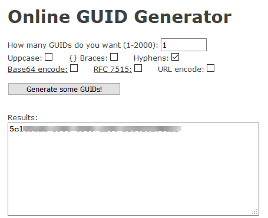
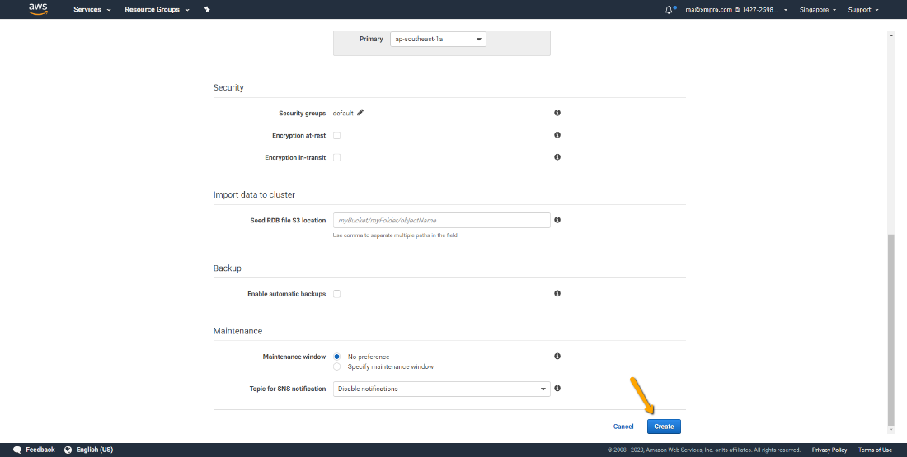
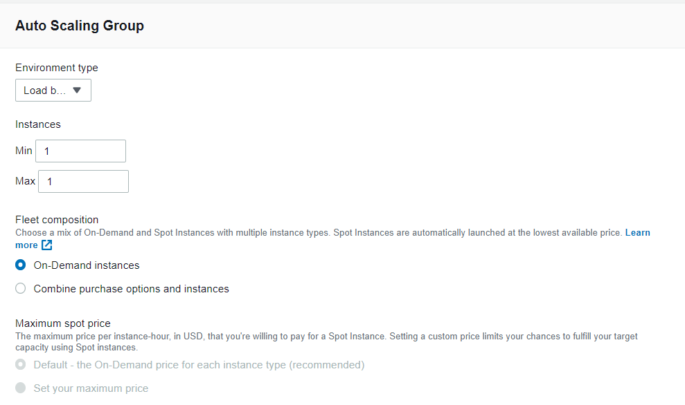
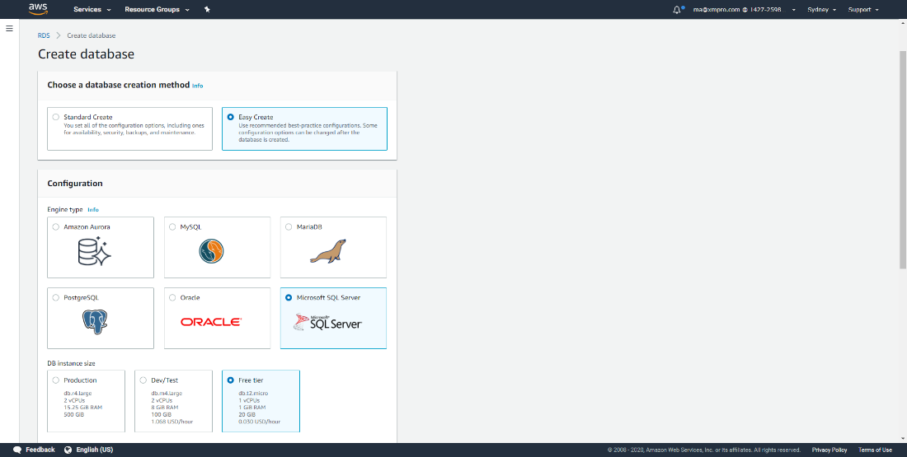

Date Selector
The Date Selector is an input field that allows users to select a date. When they open the drop-down arrow, the Date Selector shows a calendar format where they can easily and visually see the dates of the year.

Note
Some images in this document may be missing and need to be migrated from the original GitBook documentation.
Date Selector Properties
Appearance
Common Properties
You can change the visibility, styling mode, placeholder, and tooltip.
See the Common Properties article for more details on common appearance properties.
Adaptive Behavior
For some screen sizes, the date picker may not fit across the screen. If enabled, this allows the box to be displayed in a different format, for example, the date box is displayed without the large analog clock and uses a digital clock instead. This is useful for smaller devices such as mobile or IPads.


Behavior
Common Properties
The disabled property is common to most Blocks;
See the Common Properties article for more details on common behavior properties.
Type
This specified the format of the date. The options are date, time, or date and time.


Picker Type
This specifies the way the calendar or clock is displayed to the user. Options for this include default, calendar, list, rollers, or native.


List Interval
Specifies the intervals between the date or time options on the list.

Show Analog Clock
Specifies whether or not the analog clock is displayed.


Value
Common Properties
The value property is common to most Blocks;
See the Common Properties article for more details on common value properties.
Action
Common Properties
Properties that are common to most Blocks include: Navigate To and Show Confirmation Dialog;
See the Common Properties article for more details on common action properties.
Last modified: May 29, 2025